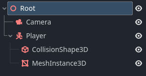

Advanced physics interpolation
Although the previous instructions will give satisfactory results in a lot of games, in some cases you will want to go a stage further to get the best possible results and the smoothest possible experience.
Exceptions to automatic physics interpolation
Even with physics interpolation active, there may be some local situations where you would benefit from disabling automatic interpolation for a Node (or branch of the SceneTree), and have the finer control of performing interpolation manually.
This is possible using the Node.physics_interpolation_mode property which is present in all Nodes. If you for example, turn off interpolation for a Node, the children will recursively also be affected (as they default to inheriting the parent setting). This means you can easily disable interpolation for an entire subscene.

It is worth noting that, both in 2D and 3D, physics interpolation is performed on the local transform of each instance. During rendering, interpolated local transforms are passed down to children.
This means that if a parent has physics_interpolation_mode set to On,
but the child is set to Off, the child will still be interpolated if the parent
is moving. Only the child's local transform is uninterpolated.
Controlling the on / off behavior of nodes therefore requires some
thought and planning.
The most common situation where you may want to perform your own interpolation is Cameras.
Cameras
In many cases, a Camera3D can use automatic interpolation just like any other node. However, for best results, especially at low physics tick rates, it is recommended that you take a manual approach to camera interpolation.
This is because viewers are very sensitive to camera movement. For instance, a
Camera3D that realigns slightly every 1/10th of a second (at 10tps tick rate) will
often be noticeable. You can get a much smoother result by moving the camera each
frame in _process, and following an interpolated target manually.
Manual camera interpolation
Ensure the camera is using global coordinate space
The very first step when performing manual camera interpolation is to make sure the Camera3D transform is specified in global space rather than inheriting the transform of a moving parent. This is because feedback can occur between the movement of a parent node of a Camera3D and the movement of the camera Node itself, which can mess up the interpolation.
There are two ways of doing this:
Move the Camera3D so it is independent on its own branch, rather than being a child of a moving object.

Call Node3D.top_level and set this to
true, which will make the Camera ignore the transform of its parent.
Typical example
A typical example of a custom approach is to use the look_at function in the
Camera3D every frame in _process() to look at a target node (such as the player).
But there is a problem. If we use the traditional get_global_transform() on a
Camera3D "target" node, this transform will only focus the Camera3D on the target at
the current physics tick. This is not what we want, as the camera will jump
about on each physics tick as the target moves. Even though the camera may be
updated each frame, this does not help give smooth motion if the target is only
changing each physics tick.
get_global_transform_interpolated()
What we really want to focus the camera on, is not the position of the target on the physics tick, but the interpolated position, i.e. the position at which the target will be rendered.
We can do this using the Node3D.get_global_transform_interpolated
function. This acts exactly like getting Node3D.global_transform
but it gives you the interpolated transform (during a _process() call).
Important
get_global_transform_interpolated() should only be used once or
twice for special cases such as cameras. It should not be used
all over the place in your code (both for performance reasons, and
to give correct gameplay).
Note
Aside from exceptions like the camera, in most cases, your game logic
should be in _physics_process(). In game logic you should be calling
get_global_transform() or get_transform(), which will give the
current physics transform (in global or local space respectively), which
is usually what you will want for gameplay code.
Example manual camera script
Here is an example of a simple fixed camera which follows an interpolated target:
extends Camera3D
# Node that the camera will follow
var _target
# We will smoothly lerp to follow the target
# rather than follow exactly
var _target_pos : Vector3 = Vector3()
func _ready() -> void:
# Find the target node
_target = get_node("../Player")
# Turn off automatic physics interpolation for the Camera3D,
# we will be doing this manually
set_physics_interpolation_mode(Node.PHYSICS_INTERPOLATION_MODE_OFF)
func _process(delta: float) -> void:
# Find the current interpolated transform of the target
var tr : Transform = _target.get_global_transform_interpolated()
# Provide some delayed smoothed lerping towards the target position
_target_pos = lerp(_target_pos, tr.origin, min(delta, 1.0))
# Fixed camera position, but it will follow the target
look_at(_target_pos, Vector3(0, 1, 0))
Mouse look
Mouse look is a very common way of controlling cameras. But there is a problem. Unlike keyboard input which can be sampled periodically on the physics tick, mouse move events can come in continuously. The camera will be expected to react and follow these mouse movements on the next frame, rather than waiting until the next physics tick.
In this situation, it can be better to disable physics interpolation for the camera
node (using Node.physics_interpolation_mode)
and directly apply the mouse input to the camera rotation, rather than apply it in
_physics_process.
Sometimes, especially with cameras, you will want to use a combination of interpolation and non-interpolation:
A first person camera may position the camera at a player location (perhaps using Node3D.get_global_transform_interpolated), but control the Camera rotation from mouse look without interpolation.
A third person camera may similarly determine the look at (target location) of the camera using Node3D.get_global_transform_interpolated, but position the camera using mouse look without interpolation.
There are many permutations and variations of camera types, but it should be clear that in many cases, disabling automatic physics interpolation and handling this yourself can give a better result.
Disabling interpolation on other nodes
Although cameras are the most common example, there are a number of cases when you may wish other nodes to control their own interpolation, or be non-interpolated. Consider for example, a player in a top view game whose rotation is controlled by mouse look. Disabling physics rotation allows the player rotation to match the mouse in real-time.
MultiMeshes
Although most visual Nodes follow the single Node single visual instance paradigm, MultiMeshes can control several instances from the same Node. Therefore, they have some extra functions for controlling interpolation functionality on a per-instance basis. You should explore these functions if you are using interpolated MultiMeshes.
Full details are in the MultiMesh documentation.